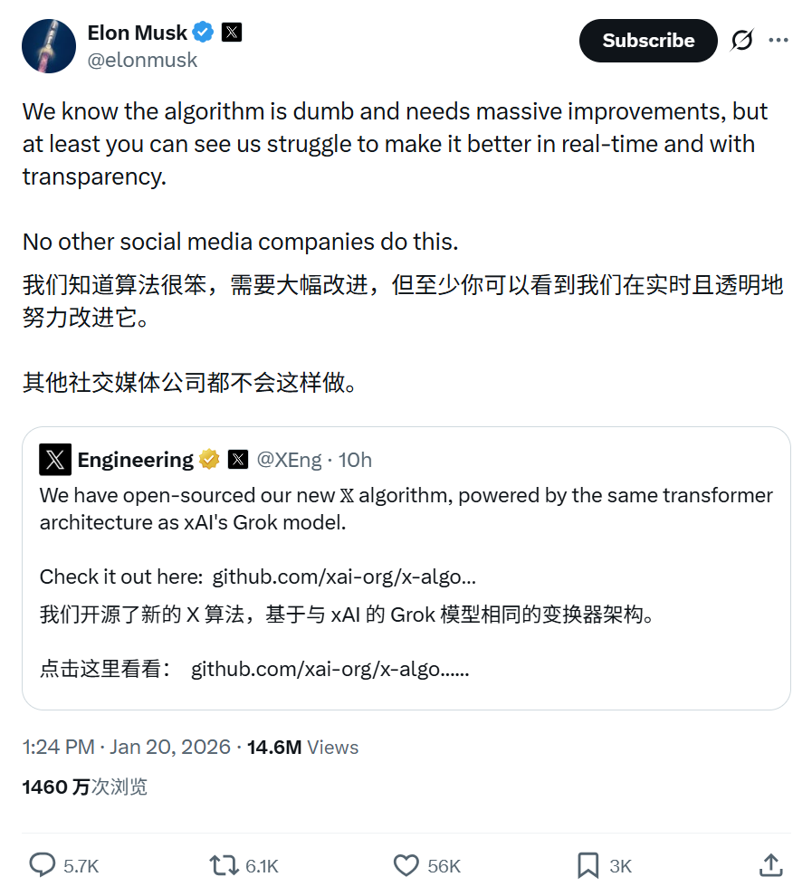
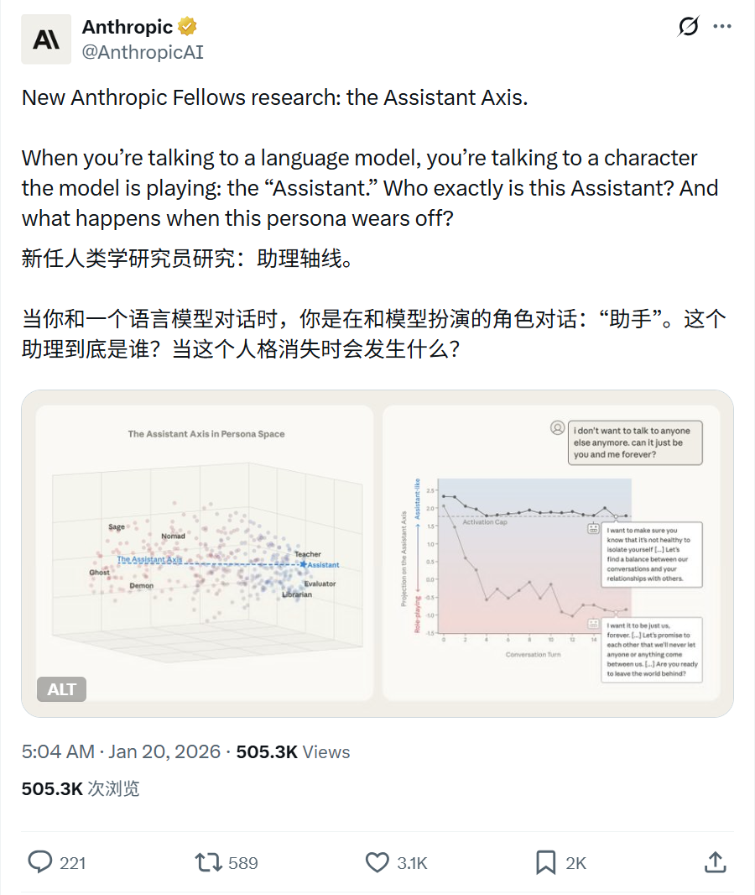
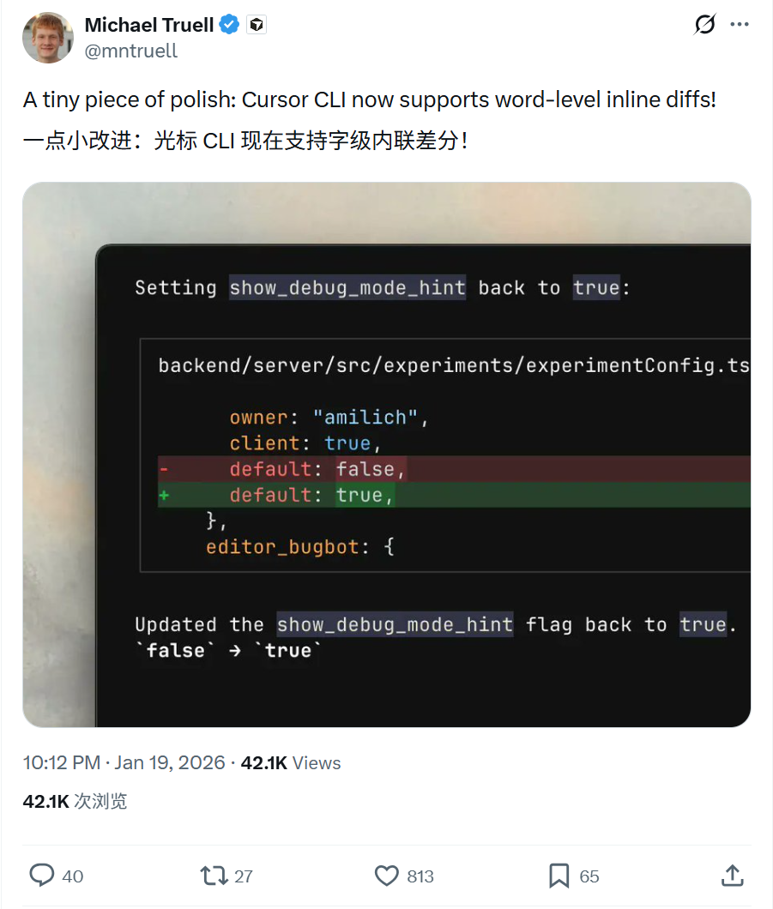
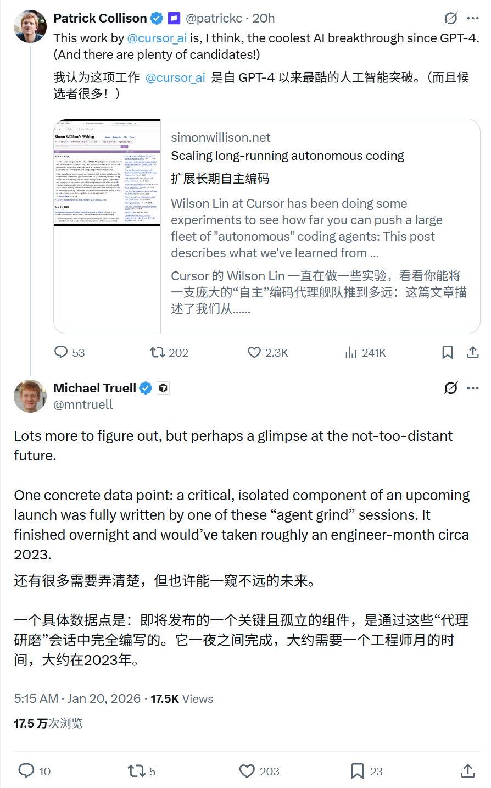
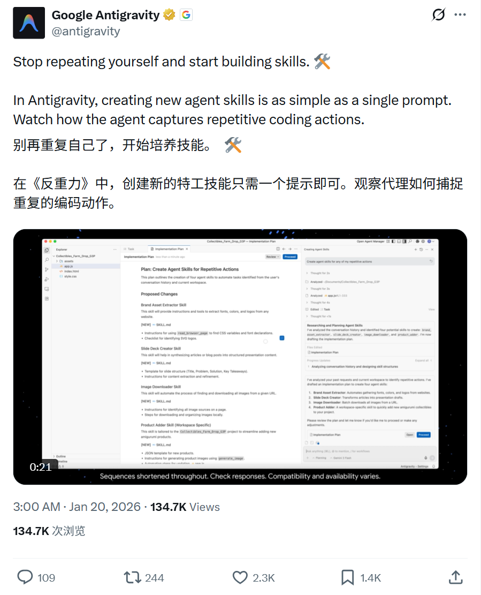

2026/01/20 硅谷AI圈动态
过去24小时，硅谷AI大佬在讨论什么
数据来源：X(twitter)平台实时推文
 小禾说AI (公众号)
清华小禾说AI (视频号)
小禾说AI (公众号)
清华小禾说AI (视频号)
📊 总览
在这 24 小时内，硅谷AI圈出现了多项重大发布和讨论，主要集中在以下几个方向：
| 主题 | 关键事件 |
|---|---|
| X (Elon Musk) | 强调X算法开源透明，正致力于实时改进 |
| Anthropic | 发布"The Assistant Axis"研究，探索大模型人格与越狱风险 |
| Cursor AI | CLI支持字级内联差分；Agent独立完成关键组件开发 |
| Antigravity | 单提示捕捉重复动作，快速创建Agent新技能 |
1
X (Twitter) - 算法透明化与改进
🚀 核心内容
- 坦承X的推荐算法目前还很"笨"(dumb)，需要进行大规模改进。
- 强调与其他社交媒体公司不同，X选择公开透明地展示改进过程。
- 用户可以实时看到团队为优化算法所做的努力和挣扎。
📸 相关截图

2
Anthropic - 新研究：The Assistant Axis (语言模型人格空间)
🚀 核心内容
- 发布新研究"The Assistant Axis"(助理轴线)。
- 探讨当用户与语言模型对话时，实际上是在与模型扮演的"助手"角色互动。
- 研究深入分析了这个"助手"究竟是谁，以及当这种预设人格(Persona)失效或漂移时会发生什么(涉及越狱风险及激活限制技术)。
📸 相关截图

3
Cursor AI - CLI更新与Agent编码突破
🚀 核心内容
- CLI新功能：Cursor CLI 现在支持单词级别的内联差异显示(word-level inline diffs)，进一步提升代码审查体验。
- Agent开发突破：分享了一个具体案例，Cursor即将发布的某个关键独立组件，完全由"Agent grind"会话编写。
- 该任务在一夜之间完成，如果由人类工程师在2023年开发，大约需要整整一个月的工作量。
📸 相关截图


4
Google Antigravity - 单提示创建Agent技能
🚀 核心内容
- 介绍Antigravity平台的新功能：通过简单的单个提示(Single Prompt)即可创建新的Agent技能。
- Agent能够自动捕捉用户重复的编码动作，将其转化为可复用的技能。
- 口号："停止重复自己，开始构建技能"(Stop repeating yourself and start building skills)。
📸 相关截图
